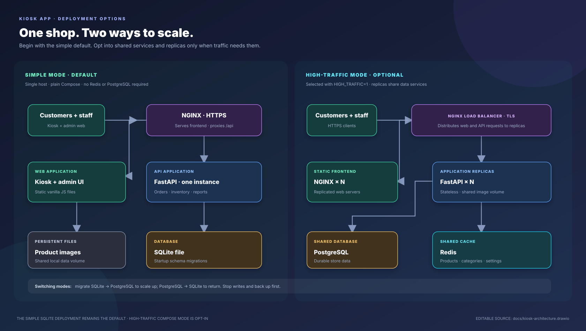

↗
Make self-service simple
Let customers browse categories, search, build a cart and check out on a shared kiosk.
Self-service shopping that keeps the customer moving and gives the team a clear view of products, orders, balances and sales.
Kiosk App · Retail, made refreshingly practical
A small store still needs a smooth way to browse, buy, keep stock straight and follow up on what is owed.
Let customers browse categories, search, build a cart and check out on a shared kiosk.
Use common keyboard-style barcode scanners to find products and add them directly to the cart.
See pending balances, order history and payment status in the staff-facing admin panel.
A scanner behaves like a keyboard: scan the code, the kiosk looks up the active product, and the shopper keeps moving.
Product categories, search, photos, weekly specials, cart totals and customer lookup in one touchscreen-friendly flow.
Support several barcode aliases for a product; keep lookup exact and shared across product setup and shopping.
Review orders, mark payments, manage stock and control products from the admin panel.
Review customer and product rankings, outstanding balances and sales across day, week and month views.
Order lines preserve product names and prices from checkout, even after the catalog changes.
Explore the interactive GitHub Pages demo with sample data before setting up a store instance.
The admin experience brings operational detail into view—without turning the shop into a spreadsheet project.
Insights are based on the data recorded by the store; the app does not claim to forecast demand.
Kiosk App records orders for staff to reconcile later. It is not a payment processor or a card terminal.
Run the app with Docker Compose and keep store data in a local SQLite file. The documented runtime does not make outbound network calls; online access is needed to build or obtain container images.
A lightweight web stack, persistent store data, HTTPS at the frontend, automatic database migrations and an offline deployment path.

The GitHub Pages demo uses an in-browser mock with sample data. A production deployment uses the backend API and its persistent database.
A friendly kiosk for customers.
A clearer picture for staff.
See the interactive demo, explore the code, or bring up your own instance with Docker Compose.
Kiosk App is a self-hosted store-kiosk project. Features described here are based on the current repository implementation; actual operation depends on local setup and store processes.